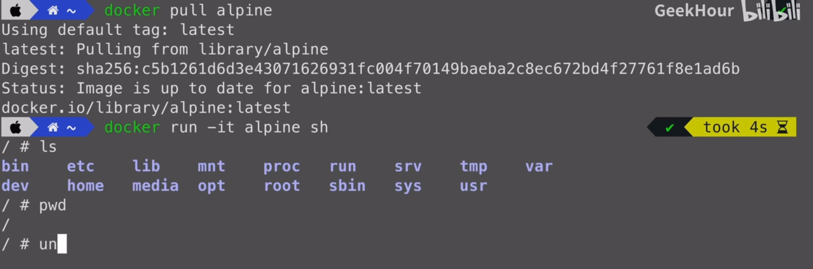
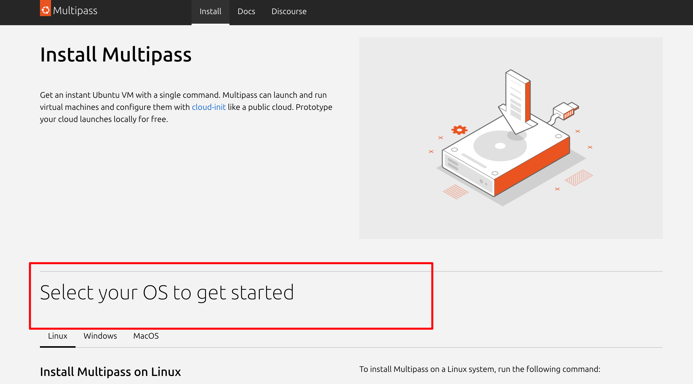
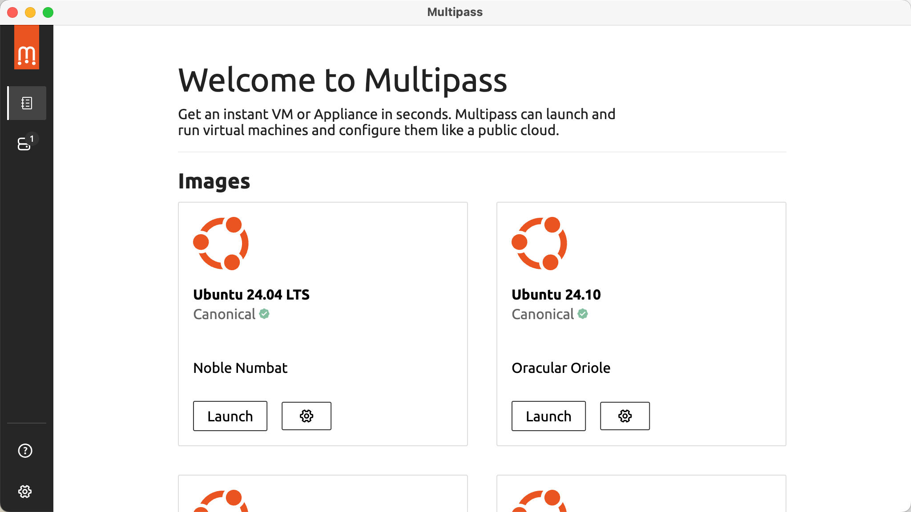
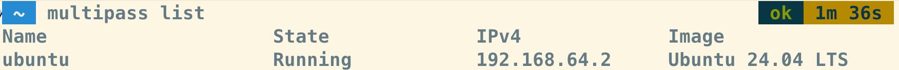
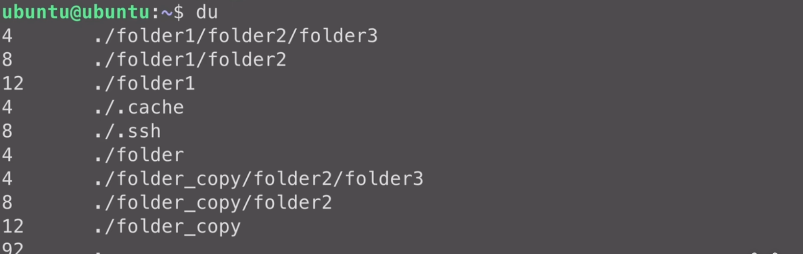
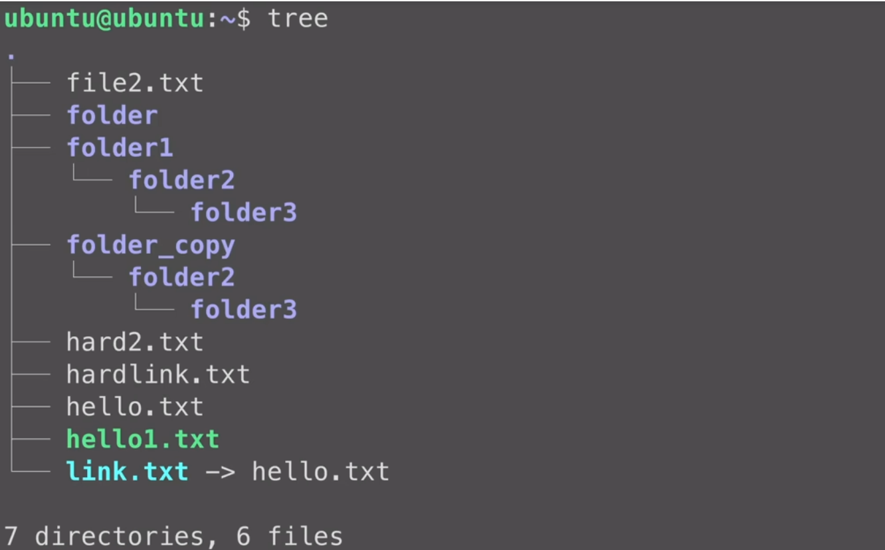

linux¶
安装和配置 Linux 系统¶
虚拟机安装¶
mac 推荐：
docker 安装¶
基于 Alpine Linux 镜像
1 | |

交互模式启动镜像，sh？
-it：Interactive；Terminal
sh：容器启动后是一个是 shell 模式的额交互
1 | |
云服务器¶
收费

mac上使用multipass 安装虚拟机系统¶
🟢 官网下载镜像，然后按提示点即可


- 报错：

解决：退出 docker desk

安装完成之后，打开命令行终端，执行一个multipass launch 命令，安装 ubuntu
name表示虚拟机的名字，参数分别表示分配给虚拟机的CPU核心数、内存、磁盘的大小
回车之后就会开始下载 ubuntu 的镜像文件，耐心等待
下载完成之后，使用 multipass list 命令，查看一下当前的虚拟机列表，可以看刚刚创建的虚拟机，已经在列表中了
接下来，使用multipass shell ubuntu进入到这个虚拟机中，ubuntu是这个虚拟机的名字，在这个虚拟机中，可以安装和配置自己需要的环境。
🟢 命令行执行，安装命令
1 | |
①

② 展示系统内安装的虚拟机列表
1 | |

③ 启动虚拟机，名称为 ubuntu，shell 方式启动
1 | |
④ 退出
1 | |
multipass 常用命令¶
vi 、vim¶
vim ：vi 的 improve 版
启动 vi：连接到 linux 系统以后，命令行输入 vi --> esc --> :q 退出
可以看到 vim 的版本号和帮助信息

vim 的三种模式¶
i 插入模式
:wq 保存并退出
esc 回到命令模式
linux 常用命令¶
长列表、逆序、按修改时间显示
print working directory
change mod修改权限（+ 加权限 - 减权限）
1 2 3 4 5 6 7 8 9 10 11 12 13 14 15 16 17 18 19 20 21 22 23 24 25 26 27 28 29 30 31 32 33 34 35 36 37 38 39 40 41 | |
查看目录结构：du 、 tree
🟢 du 命令
把当前目录下的所有文件和目录的大小都列出来，看到目录的结构
左边的数字表示的是文件或者目录的大小

🟢 包管理器安装 tree
1 2 3 | |

